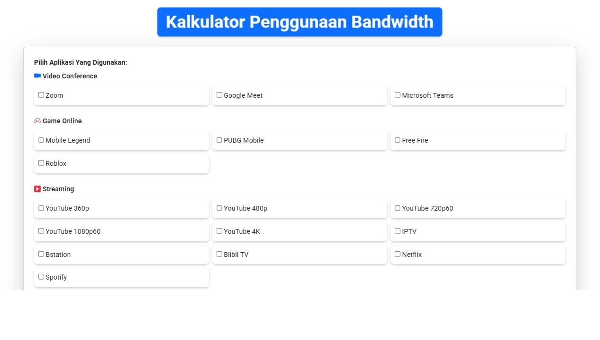
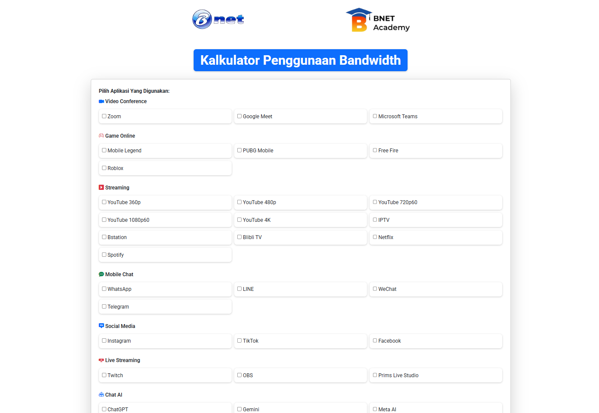

🎓 Academy

SMK Negeri 1 Karawang
Teknik Komputer dan Jaringan
2024 - Sekarang
Mempelajari Basic Networking, administrasi jaringan, dan konfigurasi server untuk mendukung infrastruktur digital sekolah.
Bnet Academy
Network Engineer
2025
Mendalami Networking, Linux Environment, dan DevOps pipeline dengan studi kasus berbasis proyek nyata industri.
Next ↓

Skills
Klik kategori di bawah ini untuk melihat keahlian saya berdasarkan bidang
Projects
Beberapa proyek yang pernah saya kerjakan
<<<<<<< HEAD

=======

>>>>>>> 43cd6ee081afa740bd6bf56b29bec9a483586633
Bandwidth Calculator
Aplikasi berbasis website yang berfungsi untuk membantu tim Network Engineer dalam menghitung dan membagi Bandwidth secara cepat dan efisien.
Lihat Detail →